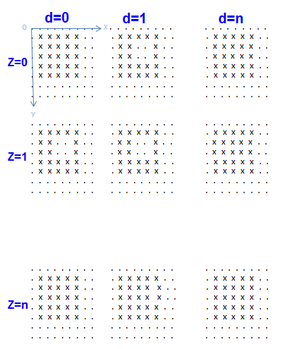

MTP_ADDRESS_FILTER.setDbits()
This member function sets the data bits to be used or not to be used with the filter.
Syntax
MTP_ADDRESS_FILTER& setDbits(const string dbits, const MTP::FILTER_MODE mode = MTP::INCLUDE);
Parameter |
Description |
|---|---|
dbits |
One data bit or a list of data bits specified by one integer or a list of integers separated with commas. The number of data bit is up to 2048. |
mode |
Lets you use or not use the listed data bits with a filter. Default mode is MTP::INCLUDE. See the options in the table below |
Option |
Description |
|---|---|
MTP::INCLUDE |
Only the listed data bits are used with the filter. |
MTP::EXCLUDE |
Except the listed data bits, all the other data bits are used with the filter. |
Example
bool test1()
{
...
//Define three filters: filter1, mask2, mask3
MTP_ADDRESS_FILTER filter1, mask2, mask3;
//filter1
filter1.setRange(MTP::X_ADDRESS,1,5).setRange(MTP::Y_ADDRESS,1,5);
//mask2
mask2.setRange(MTP::X_ADDRESS,3,4).setRange(MTP::Y_ADDRESS,2,3).setRange(MTP::Z_ADDRESS,0,1)
.setDbits("1",MTP::INCLUDE).setMode(MTP::EXCLUDE);
//mask3
mask3.setRange(MTP::X_ADDRESS,3,4).mask3.setRange(MTP::Y_ADDRESS,2,3).setRange(MTP::Z_ADDRESS,1,1)
.setDbits("0",MTP::INCLUDE).setMode(MTP::EXCLUDE);
//Define the multi-filter: mAddressFilter;
MTP_MULTI_FILTER mAddressFilter;
mAddressFilter.addAddressFilter(filter1).addAddressFilter(mask2).addAddressFilter(mask3);
...
...
}According to the "mAddressFilter" filter's setups in the example code, the enabled and disabled addresses structure is displayed in the following picture ("x" is enabled; "." is disabled):

Functional changes
- Introduced in MTP 3.1.6